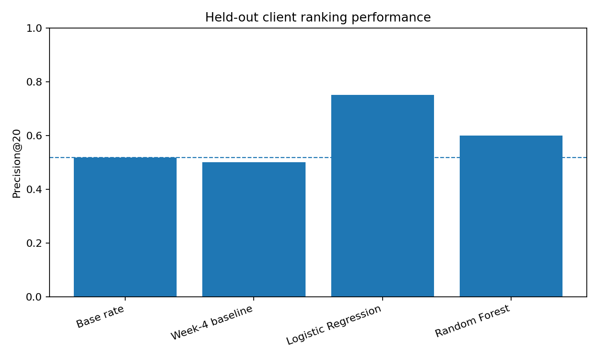
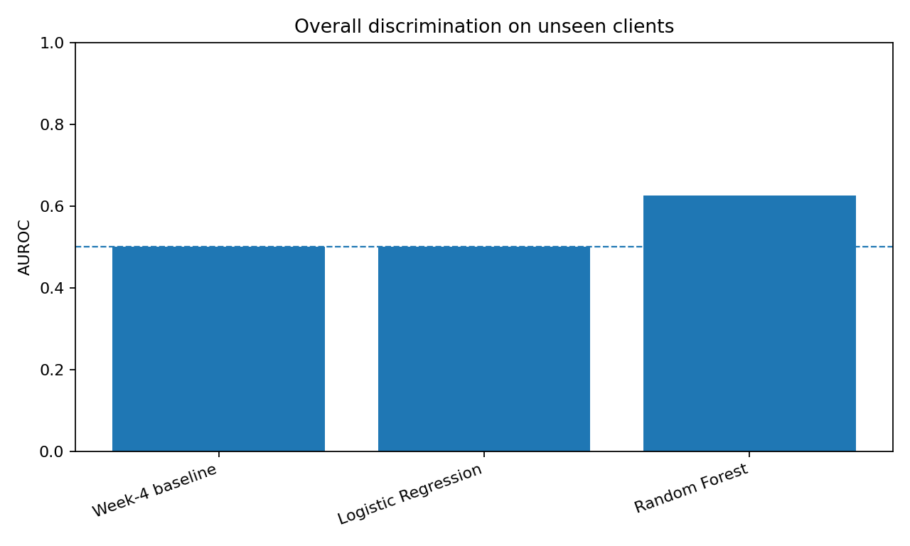
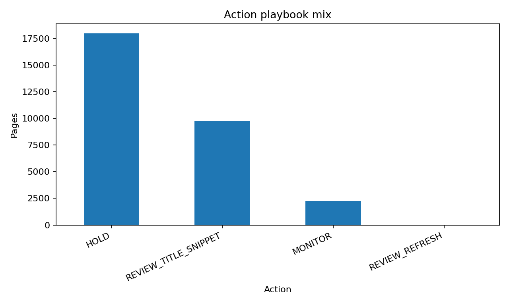
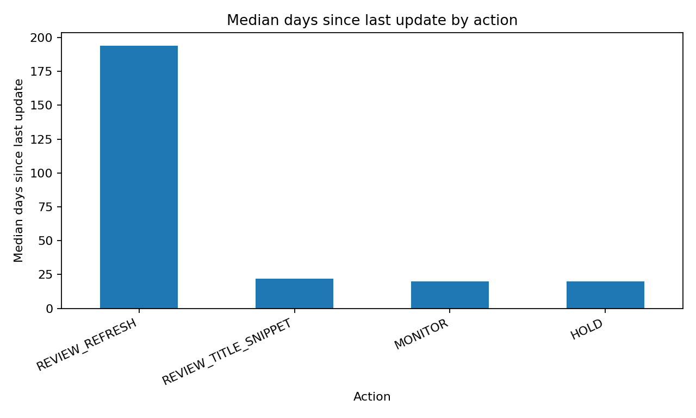

Can ML Prioritize Content Refresh Reviews?
A cautious study of content-opportunity scoring, grouped validation, and human-reviewed actions.
Abstract
This study asks whether measured search and content signals can prioritize which pages a human editor reviews first. It models 30,000 pseudonymized FlyRank starter-release pages and checks the design on a 71,777-page March 2026 frame built from the 78,835,655-row warehouse release. A transparent rule, Logistic Regression, and Random Forest are compared on the same client-grouped starter holdout using five predeclared features, while the warehouse check separates March 1–21 features from a March 22–31 outcome. Logistic Regression reached 75% Precision@20 but 0.501 AUROC, Random Forest reached 0.625 AUROC and 0.617 average precision, and the stricter warehouse check reached 0.590 AUROC. The result is therefore a ranked, human-reviewed decision-support playbook—not evidence that refreshing a page causes recovery.
1. Introduction / Problem statement
Content teams have more pages than they can inspect one by one. The practical decision is which pages an editor should review first when time is limited, not whether software should automatically rewrite or remove a page. False positives waste editorial capacity and create unnecessary churn; false negatives leave potentially useful opportunities unreviewed.
The output is a priority score, an ordered queue, and a short reason code. A person still checks search intent, page purpose, current facts, business importance, and recent changes before choosing any action.
2. Data
The primary model uses the real, anonymized 30,000-row × 44-column starter release at one row per pseudonymized content item. Warehouse support uses FlyRank internship-warehouse build v20260703, specifically fact_content_daily_performance, whose 78,835,655 daily rows span 2025-01-27 through 2026-06-30.
The warehouse contract develops on the March 2026 partition: 9,841,378 daily rows and 331,437 content items. Features use 2026-03-01 through 2026-03-21; the forward proxy compares 2026-03-22 through 2026-03-31 against the preceding ten days and keeps pages with at least 100 prior-window impressions. June 2026 remains sealed during label development.
Excluded from model inputs are trend_direction, trend_pct, the derived decline proxy, all outcome-window measurements, IDs as predictors, client names, domains, URLs, raw queries, and product decision fields. GSC availability is required for warehouse measurements; a zero recorded before tracking begins is not treated as zero activity.
3. Methodology
Transparent baseline
Ranks visible pages using meaningful impressions, positions 1–20, and a low-CTR gap.
Readable model
Logistic Regression uses impressions, clicks, CTR, average position, and days since update.
Nonlinear challenger
Random Forest tests whether interactions improve ranking beyond the readable model.
The starter proxy is an observed down-trend bucket; it is a retrospective teaching proxy, not a treatment outcome. All three methods are evaluated on the same GroupShuffleSplit(test_size=0.25, random_state=42): 24 clients / 22,885 pages for training and 8 previously unseen clients / 7,115 pages for testing, with zero client overlap.
The primary metric is Precision@20 because the decision is a capacity-limited review queue. Precision@50, AUROC, average precision, and the held-out base rate are reported beside it. Leakage checks exclude the entire label family and pseudonymous IDs from features; a deliberate warehouse label-copy test reaches AUROC 1.000 and is then deleted, while the honest five-feature check reaches 0.590.
4. Results
The grouped starter test base rate is 51.7%. Every value below comes from the same held-out clients.
| Method | Precision@20 | Precision@50 | AUROC | Avg. precision |
|---|---|---|---|---|
| Base rate | 51.7% | 51.7% | 0.500 | 0.517 |
| Week-4 baseline | 50.0% | 58.0% | 0.500 | 0.513 |
| Logistic Regression | 75.0% | 62.0% | 0.501 | 0.525 |
| Random Forest | 60.0% | 72.0% | 0.625 | 0.617 |


5. Limitations & honest framing
- The starter release is a trailing-90-day snapshot, not an intervention study; its proxy is not an independent future truth label.
- The warehouse outcome is stronger temporally, but a ten-day impression decline can reflect seasonality, search demand, SERP changes, or measurement noise.
- CTR depends on rank and result-page layout; staleness does not imply poor quality.
- Precision@20 is capacity-aligned but based on only twenty cases and should not be read alone.
- Grouped validation tests unseen clients, but the primary starter result is not a future-month test.
- No result proves that refreshing, rewriting, pruning, merging, or changing metadata causes recovery.
6. Ranked recommendations
- Review title/snippet — 9,759 pages. Reason code
LOW_CTR_VISIBLE. Confirm query intent, ranking position, SERP features, and whether the snippet accurately represents the page before changing metadata. - Review refresh — 6 pages. Reason code
STALE_HIGH_VOLUME. Check factual freshness, traffic history, cannibalization, and recent site changes before editing. - Monitor — 2,264 pages. Reason code
VISIBLE_MONITOR. Preserve the page and watch a future window rather than creating churn from weak evidence. - Hold — 17,971 pages. Reason code
INSUFFICIENT_SIGNAL. Gather more data or leave unchanged; a complete queue does not require forcing every page into an intervention.


No-go automation: do not automatically publish, rewrite, delete, noindex, redirect, canonicalize, merge pages, alter production metadata or schema, or promise traffic improvement.
7. Reproducibility
Random seed 42 is fixed where applicable. The repo contains the starter release, requirements, executed weekly notebooks, public-safe metric receipts, the action playbook, and this capstone companion.